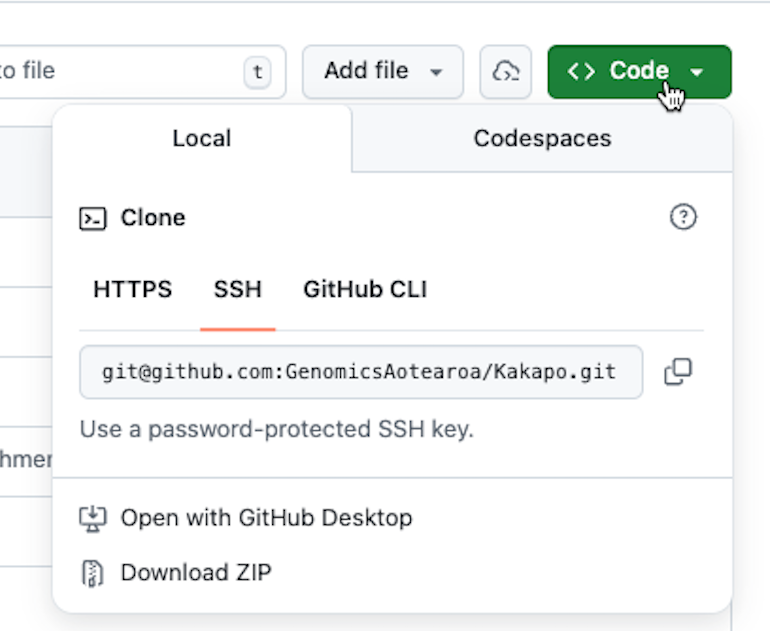
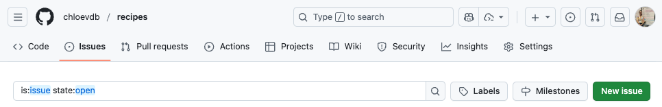
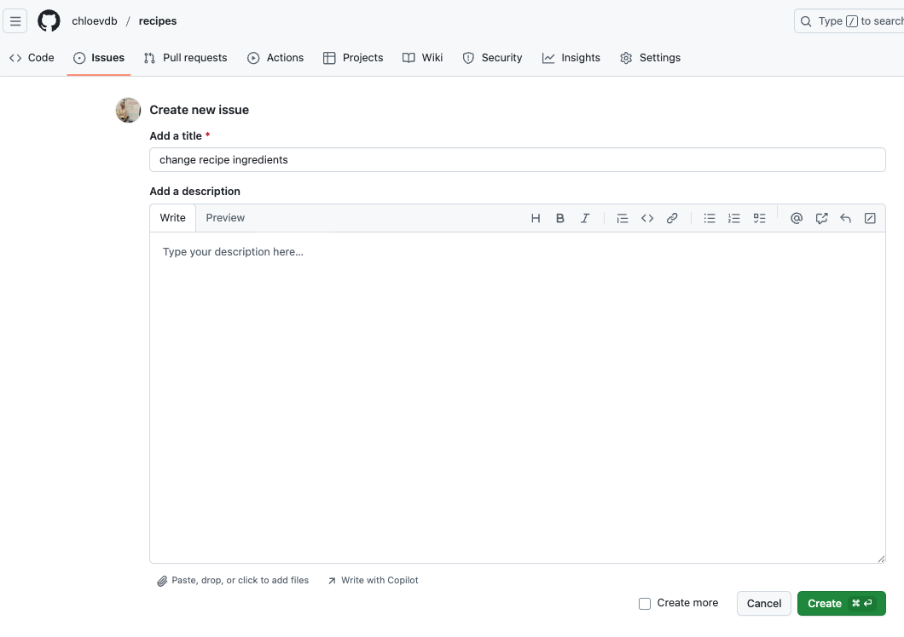
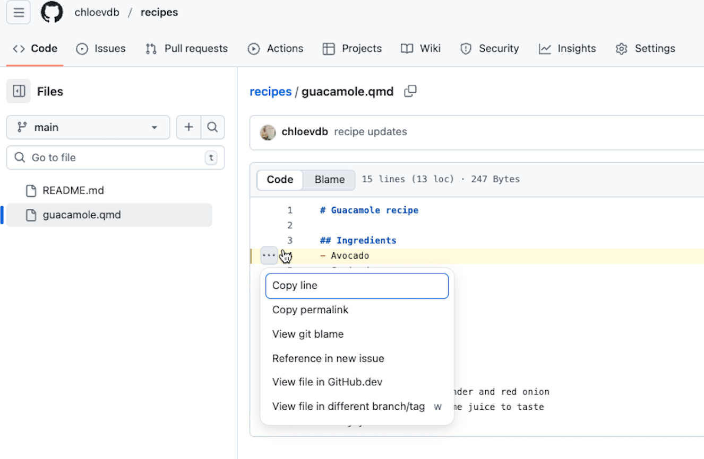
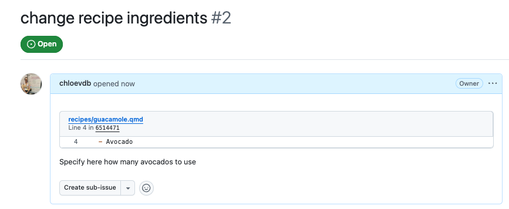
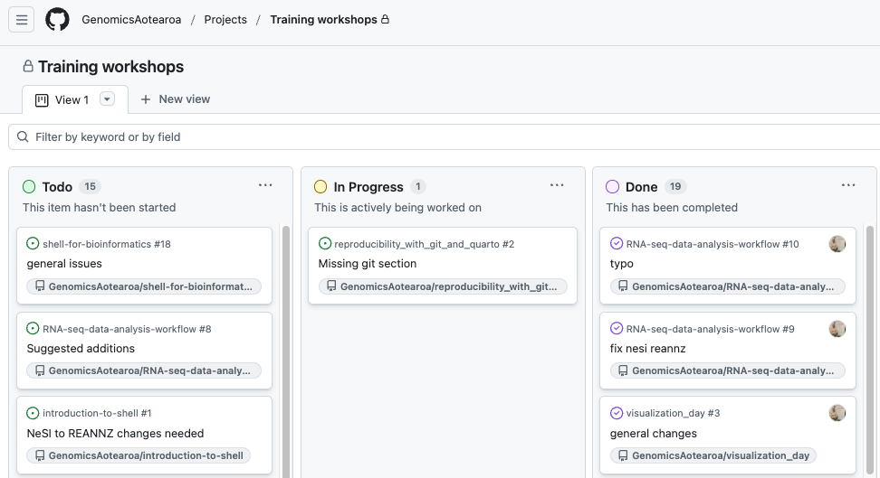

Collaborating and organising your workflow
git clonecopies a remote repository to create a local repository with a remote called origin automatically set up.- use ‘Issues’ to track and fix any issues in a transparent way
- use ‘Projects’ to collaboratively track tasks
- ‘Organisations’ share repos and have different roles and access levels for members
Cloning remote repositories
Often we want to download other people’s repositories to our local machine. One main reason for this can be because you want to use a set of scripts developed for a workflow.
To do this, we use git clone.
First, navigate on GitHub to a repository that you want to download. If you have one in mind already go ahead and use that; for this example we will use the Kākāpo Genome project repo.
Click this link here to go to the Kākāpo Genome project repository.
You’ll now see the repository for the Kākāpo Genome project on GitHub. Go to the green button in the top right that says “<> Code” and click it.

Now, copy the SSH URL. For the Kākāpo Genome project repository this is:
git@github.com:GenomicsAotearoa/Kakapo.gitBack in your RStudio on the terminal, check first which dir you are in:
pwd/Users/username/Desktop/recipesI am still in my recipes dir. It is best to not put a cloned repository into a local repository directory!
You will want to cd into a different directory. Either run cd .. to move back to your desktop, or cd /PATH/TO/DIR into a new dir of your choosing.
Once you are happy where you are in your file system, type the following:
git clone git@github.com:GenomicsAotearoa/Kakapo.gitYou’ll see an output like this as git downloads all the files (shortened here for visual clarity):
Cloning into 'Kakapo'...
remote: Enumerating objects: 1713, done.
remote: Counting objects: 100% (54/54), done.
remote: Compressing objects: 100% (42/42), done.
Receiving objects: 5% (88/1713), 15.61 MiB | 4.92 MiB
....
Receiving objects: 100% (1713/1713), 45.63 MiB | 6.00 MiB/s, done.
Resolving deltas: 100% (938/938), done.And now you will find the full repository on your computer and you can use the scripts for your own purposes.
Short answer no, you will not have write access (unless you are a collaborator on the repo!) and you will get a permission denied error.
Long answer, yes you can with additional steps:
1. You can fork the repo to your own GitHub account.
2. Clone your fork and make your changes.
3. Push changes to your own forked repo.
4. Then, you can create a pull request and suggest changes to the original repo - the owner may or may not accept and merge your changes!
Hint: If you don’t want this on your computer anymore after this workshop type:
rm -r Kakapo
Improving your workflow
Issues
Issues are a fantastic way to track what you want to change. You can open an issue for each change you want to make (i.e., typos, bug fixes, adding images, stylisation - anything!) and when you commit changes you can reference the issue number (e.g., git commit -m "Bug fixes issue #1") which links up the commit with the addressed issue automatically. Other people can also see and add issues to your repo – a great way to track progress!
There are a few other tips and tricks with ‘Issues’, but one of the most useful ones is being able to reference exact lines where you want to make changes using ‘permalinks’.
Note: If you cannot see the ‘Issues’ tab on your repo, you may need to go to General Settings and enable the tickbox for ‘Issues’.
Have a go at adding an issue for a change you want to make in your guacamole recipe, then make the change locally, add and commit the change, referencing the issue in the commit message.
Go to your recipes repo on GitHub, find ‘Issues’ tab and click “New issue”.

Then add a title, e.g.,:

Before you create the issue, right click your recipes repo in the top left, and open it in a new tab. Then, click on guacamole.qmd to bring up the code. On the left of the line you want to change, click to get the three dots to appear, click the dots, and click ‘Copy permalink’.

Now go back to your issue, paste the permalink in the description, and add whatever descriptive text you want and create the issue:

Our guacamole.qmd file is not very big, so specifying the exact line is not really necessary, but if you have a file with hundreds of lines of code then being able to track and note exactly where typos are is really handy!
Now, go back to your terminal, make the changes locally, add, commit and push the changes, then go back to your GitHub repo and explore what happens!
cd ~/Desktop/recipesQuick safety checks:
git status
git branchBefore you go any further, are you on the right branch? To change existing branches:
git checkout <branch-name>Now we are back on main. But wait, we merged a pull request earlier on GitHub, but these changes were made locally on a new branch before pushing to GitHub. Now that we are back on main, what does our guacamole.qmd file look like locally?
cat guacamole.qmd# Guacamole recipe
## Ingredients
- Avocado
- Coriander
- Red onion
- Lemon juice
- Salt
## Instructions
1. Mash the avocado
2. Finely chop the coriander and red onion
3. Add salt and lemon juice to taste
4. Enjoy!It’s our original recipe, without the added lime juice. We need the new one!
We can use git fetch to fetch information about files from the server (i.e., origin/main) and compare to our local files (i.e., main) to see if we need to pull down new copies of the files:
git fetch origin
git diff main origin/maindiff --git a/guacamole.qmd b/guacamole.qmd
index 6249f4c..2dc69fb 100644
--- a/guacamole.qmd
+++ b/guacamole.qmd
@@ -4,11 +4,12 @@
- Avocado
- Coriander
- Red onion
-- Lemon juice
+- Lemon juice
+- Lime juice
- Salt
## Instructions
1. Mash the avocado
2. Finely chop the coriander and red onion
-3. Add salt and lemon juice to taste
+3. Add salt,lemon and lime juice to taste
4. Enjoy!The output shows there are lines that are different between our local main and our server origin/main.
git fetch does not touch your local files, so we now need to pull down the new file:
git pull origin main Double check your local files match the server:
git fetch origin
git diff main origin/maingit diff gave no output - so all good to continue!
nano guacamole.qmd# Guacamole recipe
## Ingredients
- Avocado x 2
- Coriander
- Red onion
- Lemon juice
- Lime juice
- Salt
## Instructions
1. Mash the avocado
2. Finely chop the coriander and red onion
3. Add salt,lemon and lime juice to taste
4. Enjoy!In the above file I have now specified the number of avocados. Write out and close nano.
Check the file is now ‘modified’:
git statusNow add and commit the file, importantly, reference the issue!:
git add .
git commit -m "specified number of avos #2"Issues and pull requests share a numbering system. Because we did a pull request earlier, that got designated as #1. Therefore GitHub has automatically named this issue #2.
git push origin mainGo back to your GitHub repo and have a look at the commit message - you’ll see the issue number is automatically linked. You can now click through and “Close issue”.
Projects
Projects are a workflow management tool within GitHub, that allows us to plan and track issues and pull requests for multiple repositories in a single board. You can assign issues to collaborators and together use a single Project to track progress and who is working on what. You can designate tasks as “Todo”, “In Progress”, or “Done” (or use custom columns) and even set up automatic actions, so that issues are automatically moved from “In Progress” to “Done” when the issue is mentioned in a commit.
Projects have many customisable options – you can read more about them here.
Here is an example of the Project we use at Genomics Aotearoa to track workshop material repos:

Organisations
“Organisations are shared accounts where businesses and open-source projects can collaborate across many projects at once, with sophisticated security and administrative features.”
- GitHub docs
There are many great features of using an Organisation account. You can view the Genomics Aotearoa Organisation account here. This is where we house all our workshop material and research project repos for workflows or scripts associated with a project. Members are assigned different roles, which allow different levels of read/write permissions and other things such as admin access or security management.
For further information on Organisations, see the GitHub docs here.
Final thoughts
Best practises
To avoid conflicts (and headaches!) we can manage our workflow by always:
- Checking our file and branch status with git status, git branch and git diff
- At the end of each day, remember to save your work by running git add, git commit and git push.
- At the start of each day, check if there have been any changes to the repo on the server, and git pull as necessary.
- Utilise branches and handy functionality such as ‘Issues’ and ‘Projects’ when collaborating with others – or even just for yourself!
Burn it all down
Sometimes our repos get too messy and complicated, and we just want to burn it all down.
This website called Happy git with R by Jenny Bryan and Jim Hester is a fantastic guide on how to make Git/GitHub work with RStudio. If all else fails, they suggest in section 37 to simply “Burn it all down”. In short, make a copy of all the files you want to keep locally, delete your repo on GitHub and start anew.